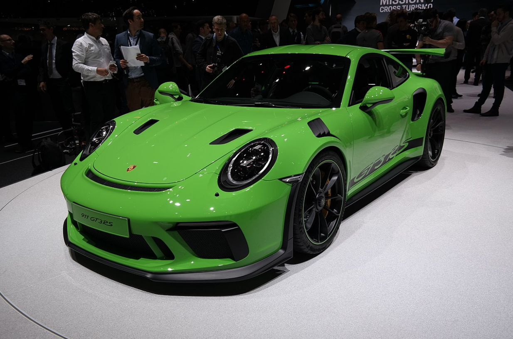

porshe 911
Porsche 911 — ორკარიანი 2+2 მაღალი წარმადობის უკანა ძრავით აღჭურვილი სპორტული ავტომობილი, რომელიც წარადგინეს 1964 წლის სექტემბერში, შტუტგარტში, გერმანია. მას აქვს უკან დამონტაჟებული ექვსცილინდრიანი ოპოზიტური ძრავა და ორიგინალი გრეხითი (ტორსიონული) საკიდარი. მანქანა მუდმივად იხვეწებოდა წლების განმავლობაში, მაგრამ ძირითადი კონცეფცია უცვლელი დარჩა.[1] ძრავებს ჰაერის გაგრილების სისტემა ჰქონდა 1998 წლამდე.[2] 991 არის ერთ-ერთი ყველაზე წარმატებული საკონკურსო მანქანა. 1970-იანი წლების შუა პერიოდში, ბუნებრივად ასპირაციულმა 911 Carrera RSR-მა მოიგო მსოფლიო ჩემპიონატები რბოლაში, მათ შორის ტარგა ფლორიო და დეიტონას 24 საათი. 911-ის მიერ წარმოებულა 935 ტურბომ მოიგო ლე მანის 24 საათიანი რბოლა 1979 წელს. Porsche-მ მოიგო მსოფლიო ჩემპიონატი Makes-ისთვის 1976, 1977, 1978 და 1979 წლებში 911-ის მიერ წარმოდებული მოდელებით.
 back